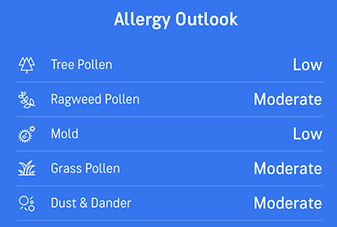
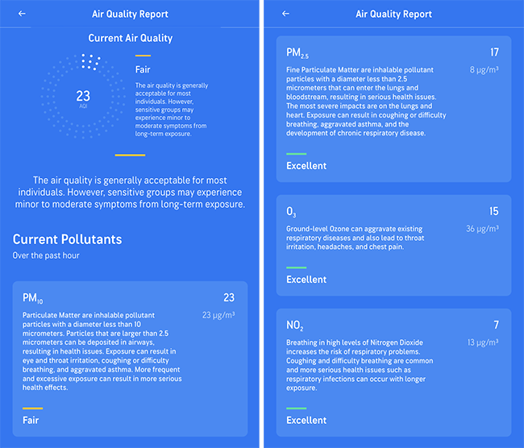

These factors will affect your choice of route, clothing, distance, and pace:
It is helpful to know what pollutants are in the air. If you are sensitive to certain allergens, then high pollen or dust counts may affect your run.
 Visit theAir Now websiteto learn about the AQI.
Decide how far or how long you want to run, then select a route that supports your goal. Other considerations include:
Weather
Terrain
Personal Preferences
Select your clothing based on the weather and trail surface.
Hot Weather
Cold Weather
Trail Surface
Select your support tools based on the weather, duration of your run, and personal preferences.
Weather: If it's sunny, you'll want dark tinted sunglasses. If it's cloudy, lighter tint sunglasses will reduce glare without limiting your vision.
Duration: For longer runs, you may need a hydration pack. This is especially important on hot days or if your route does not include a water source.
Personal Preferences: Wear a digital sport watch to track your time, distance, and/or pace. Bring headphones if you prefer listening to a guided run, podcast, or music.
Walk for 5-10 minutes to warm up your muscles and joints. Then complete a gentle stretching routine that includes the major muscle groups:
You're ready to run! Remember to start easy, then slowly increase your effort over the course of the run.